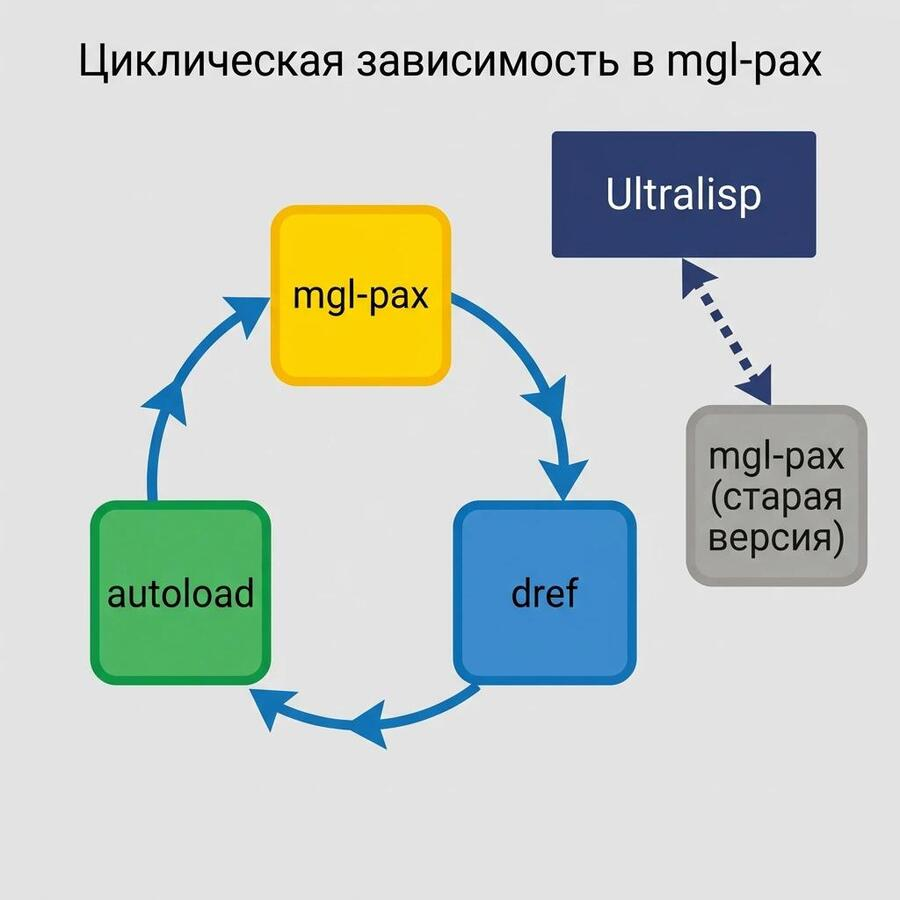

Циклическая зависимость в mgl-pax
Tagged as commonlisp, ultralisp, problems
Written on 2026-04-19

В эти выходные решал проблемку с отвалившейся named-readtables на UltraLisp.
Named-readtables библиотека довольно много где используется, и то что она стала недоступна - большая проблема.
Дебажить пришлось долго, и вот что оказалось.
Звёзды так сошлись, что:
• Ultralisp выкидывает из диста проект при ошибках проверки очередного коммита (это стоит починить • Gábor Melis намутил в своих либах циклическую зависимость, когда mgl-pax зависит от свежей версии dref и наоборот и попытался это решить с помощью либы autoload. • Процесс, проверяющий проекты в Ultralisp сам по себе зависел от старой версии mgl-pax, которая была притянута как транзитивная зависимость • Новый mgl-pax конфиликтовал со старым и не мог просто подгрузиться в образ где уже была старая версия. • Из-за этого не мог провериться dref которому нужна новая версия mgl-pax. • То есть, эти три либы mgl-pax, dref и autoload надо было обновлять все разом, а Ultralisp так не умеет.
В итоге, чтобы обновить эту пачку либ пришлось пересобрать сам Ultralisp так, чтобы там была вкомпилирована свежая версия mgl-pax. Теперь всё заработало.
Вывод - надо уменьшать количество зависимостей в бинаре, который чекает загрузку других библиотек. В идеале - до нуля!
Created with passion by 40Ants